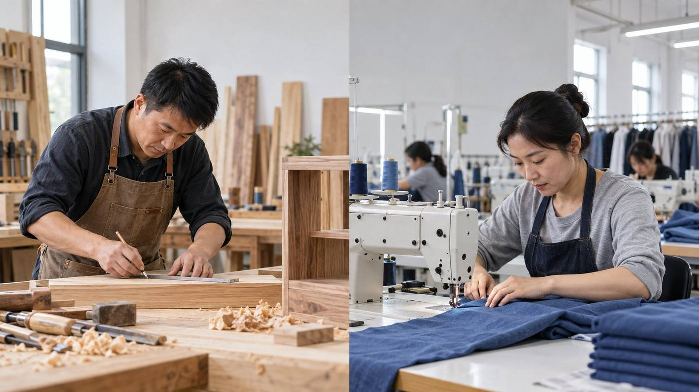
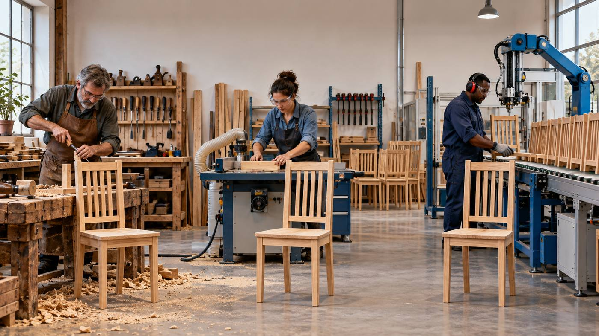
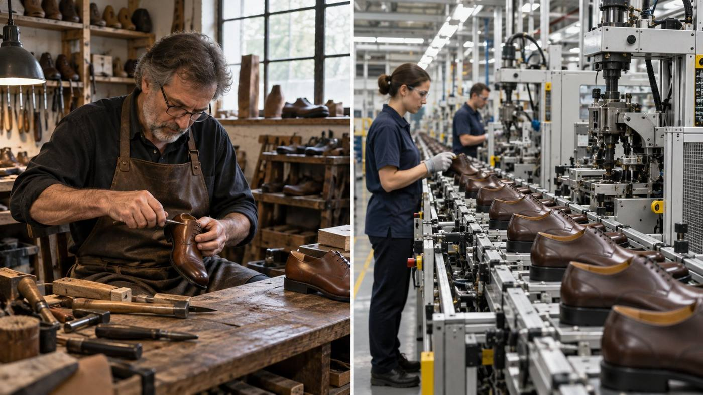

先依据生活经验作出判断并记录理由；本章将依次解决商品形式、价值基础和价值量的社会尺度。
01 商品形式：为什么车辆必须同时满足“有用、是劳动产品、为交换而生产”三个条件，才成为商品？
02 价值基础：新能源汽车、粮食和衣服用途不同，为什么仍能形成可比较的交换比例？
03 社会尺度：同类车辆由不同企业以不同耗时生产，价值量为什么不能由某一家企业的个别耗时决定？
围绕三个案例问题，依次展开商品二因素、劳动二重性、商品价值量及劳动价值论认识的深化。
① 商品和商品经济：定义、历史条件与交换关系。
② 商品二因素：使用价值、交换价值、价值及其关系。
③ 劳动及其矛盾：劳动二重性、私人劳动与社会劳动。
④ 商品价值量：社会必要劳动时间、复杂劳动和劳动生产率。
⑤认识深化：当代劳动形式的新变化，以及对劳动和劳动价值论的新认识。
① 商品二因素的统一与矛盾，价值与交换价值的区别。
② 劳动二重性是同一劳动的两个方面，不是两种劳动。
③ 私人劳动必须通过交换转化为社会劳动。
④ 社会必要劳动时间决定价值量，生产率与单位商品价值量成反比。
商品首先必须能够满足人的某种需要；无用之物即使耗费劳动，也不能成为商品。
商品必须经过人的劳动。自然存在、未经劳动的空气和天然草地可以有用，却不形成商品价值。
产品必须针对他人需要，并通过交换让渡。自己生产、自己消费的劳动产品没有取得商品形式。
判断关键：不能只问“有没有用、有没有劳动”，还要问劳动产品是否进入商品交换关系。
反例：自然空气有用，但不是劳动产品；家庭自用饭菜有用且耗费劳动，但不进入交换。
正例：瓶装水、餐厅饭菜经过劳动加工，并以交换为目的转到他人手中，因此是商品。
观察图片后，依次检验“有用—劳动产品—用于交换”三个条件。
| 对象 | 有用 | 劳动产品 | 用于交换 | 判断 |
|---|---|---|---|---|
| 空气 | 是 | 否 | 否 | 不是商品 |
| 瓶装矿泉水 | 是 | 是 | 是 | 商品 |
| 自用蔬菜／家庭饭菜 | 是 | 是 | 否 | 不是商品 |
| 出售蔬菜／餐厅饭菜 | 是 | 是 | 是 | 商品 |
劳动专业化使生产者只生产部分产品，却需要消费多种产品；相互依赖要求他们交换劳动成果。
不同主体独立占有和支配生产资料及产品，具有各自经济利益，只能通过等价交换建立联系。
关键关系：社会分工造成相互依赖，生产者独立又使这种联系不能直接完成，只能借助商品交换。
| 比较维度 | 自然经济 | 商品经济 |
|---|---|---|
| 生产目的 | 直接满足生产者自身需要 | 以交换为目的，为他人生产使用价值 |
| 生产者联系 | 相对封闭、分散 | 通过社会分工和商品交换形成联系 |
| 劳动的社会承认 | 产品直接进入自身消费 | 私人劳动要经过交换才获得社会承认 |
| 产品实现方式 | 生产与消费直接衔接，产品不必取得价值形式 | 产品必须被他人购买，使用价值让渡与价值实现同时发生 |
区别不在于有没有劳动，而在于劳动产品是否以商品交换作为社会联系的中介。
| 比较 | 马克思主义政治经济学的商品分析 | 西方经济学中的经济物品分析 |
|---|---|---|
| 主要问题 | 劳动产品怎样通过交换取得商品形式，并体现生产者之间的社会关系 | 稀缺资源怎样配置，行为主体怎样作出选择 |
| 分析起点 | 商品的使用价值与价值二因素 | 需要、稀缺性、偏好、机会成本等 |
| 解释层次 | 从交换比例进一步追问价值实体和生产关系 | 侧重价格、选择与资源配置机制 |
| 联系 | 两者都研究经济活动中的物品与选择，但概念体系和解释任务并非完全对应。 | |
注意：使用价值与效用、价值与价格存在分析联系，但不能作为完全对应的概念相互替换。
有用性使产品能够进入消费，价值使不同商品能够在交换中进行社会比较。
商品必须同时具备二者：没有使用价值，价值无从承担；不经过交换，价值也不能实现。
需要既可以是衣食住行等物质需要，也可以是教育、文化等精神需要。
物的性质决定其用途；同一物品可能因多种自然属性而具有多种使用价值。
产品只有进入实际使用或消费，其有用性才由可能状态转化为现实。
小麦由不同社会形态中的劳动者生产，其营养用途并不因此改变。
政治经济学不研究每一种物品的具体用途，但必须研究使用价值怎样成为交换价值的物质承担者。
同一种商品可以有多种交换价值表现。比例随交换对象变化，但不能用用途差异或个人主观意愿解释。稳定交换要求不同商品中存在共同的、可以进行量的比较的社会内容。
实体：无差别的一般人类劳动。
性质：客观、高度抽象的社会经济范畴。
表现：以社会分工为基础，在商品交换中取得可见形式。
商品的有用性，由自然属性决定；它是交换价值和价值存在的物质承担者。
价值的表现形式，呈现为一种使用价值同另一种使用价值交换的数量比例。
无差别的一般人类劳动的凝结，是不同交换价值形式背后的共同社会内容。
理解顺序：先看到有用物之间的交换比例，再透过比例把握其共同的社会内容。
生产者占有商品的使用价值，却以取得价值为目的；只有把有用物让渡给购买者，私人劳动才可能得到社会承认和补偿。
购买者关心商品的实际用途；要取得使用价值，就必须支付相应价值，使生产者凝结在商品中的劳动获得社会承认。
先判断物的有用性，再判断劳动产品是否进入交换关系。
某家庭从同一菜园收获20千克蔬菜。8千克直接用于晚餐和腌制；其余12千克经过清洗、分拣、装袋和标价，带到周末市场出售。两部分蔬菜具有相近的自然属性，也都包含播种、照料和采收等劳动，但生产目的、让渡对象和实现方式不同。
1. 两部分蔬菜是否都具有使用价值？
2. 两部分是否都是劳动产品，是否都形成价值？
3. 为什么只有进入市场的12千克蔬菜取得商品形式？
两部分蔬菜都能满足食用需要，都具有使用价值。可见，有使用价值只是成为商品的必要条件，并不是充分条件。
两部分蔬菜都经过播种、照料和采收，是劳动产品；但自用部分没有进入商品交换，其中的劳动不取得价值形式。
市场出售部分是为他人需要而提供的社会化使用价值，通过交换转到消费者手中，因此取得商品形式并实现价值。

木工与制衣劳动在目的、对象、工具、方法和结果上各不相同；这些特殊形式与生产资料结合，创造不同的使用价值。具体劳动反映人和自然、人和物的关系，其形式还会随科技进步和社会需要变化。
撇开木工、制衣、装配等特殊形式，各种劳动都表现为人的体力和脑力耗费，因而可以进行量的比较。
抽象劳动凝结在商品中，是形成商品价值的唯一源泉；自然物质本身不构成价值实体。
并非任何一般劳动耗费都自动形成价值；只有在商品生产和交换关系中，它才以价值形式表现。
难点：“抽象”不是头脑任意删减，而是商品交换把不同私人劳动实际化为同质社会劳动的过程。
| 比较 | 具体劳动 | 抽象劳动 |
|---|---|---|
| 考察角度 | 劳动的特定目的、有用性和具体形式 | 撇开具体形式，只看一般人类劳动耗费 |
| 结果 | 创造使用价值 | 形成价值 |
| 属性 | 劳动的自然属性，人类社会生存发展的永恒条件 | 劳动的社会属性，由商品经济关系决定 |
| 差异 | 不同具体劳动在质上不同 | 抽象劳动在质上同一，可进行量的比较 |
| 所体现关系 | 反映人与自然、人与物的关系 | 体现商品生产者之间的社会生产关系 |
从劳动的特殊目的、有用性和具体形式考察；不同具体劳动在质上不同。
从一般人类体力和脑力耗费考察；各种抽象劳动在质上同一、量上可比。
生产商品的劳动二重性，是商品二因素的劳动基础。
这一区分为剩余价值、资本积累和社会再生产等后续理论提供了分析基础。
生产资料和劳动产品由彼此独立的生产者占有和支配；生产什么、生产多少、怎样生产，首先由各主体自行决定，劳动直接表现为私人行为。
社会分工使生产者相互联系、相互依赖；每个生产者的劳动客观上应当成为社会总劳动的一部分，但这种性质不能在生产者内部直接得到证明。
基本矛盾：劳动在生产时直接具有私人性，却又必须通过商品交换证明自己是社会所需要的劳动。
同一案例中的三个问题和三层矛盾，在一页中逐项对应。
一家服装作坊根据自身判断集中生产一批冬装。产品保暖功能正常，也确实耗费了裁剪、缝制和管理劳动，但款式与当季市场需要不匹配，大量库存长期无人购买。
衣服仍能保暖，为什么它的使用价值仍可能无法进入社会消费？
已经耗费的裁剪和缝制劳动，是否会自动得到市场补偿？
作坊的私人劳动在何种意义上没有全部转化为社会劳动？
在日常交换中，人们首先看到商品、价格和订单之间的关系；不同生产者的劳动联系，却只能借助这些物的运动间接表现。
理论要点：神秘性不来自物的用途，而来自彼此独立的私人劳动必须通过商品交换表现其社会性质。
三组矛盾不是平行堆放：私人劳动与社会劳动的矛盾，是前两组矛盾的社会根源。
如果价值按每个生产者的实际耗时决定，效率越低反而越“有价值”，商品交换因而需要统一的社会尺度。

技术只有成为社会正常生产条件的一部分，才会改变社会必要劳动时间和单位商品价值量。
个别劳动时间反映某一生产者的设备、技术、熟练程度和组织效率；同种商品不能因此形成多个彼此不同的社会价值。
指一定时期某一部门中大多数生产者实际具有、普遍采用的生产资料、技术和组织状况。
排除最先进者、落后者和异常劳动强度的个别差异，以社会通常水平形成统一尺度。
关键判断：劳动时间是计量价值量的尺度，但决定价值量的不是个别耗时，而是动态变化的社会必要劳动时间。
假定三家作坊生产质量相同的同一种商品，市场正常条件对应4小时。
个别劳动时间低于社会尺度。思考：节约的个别时间会不会使市场价值只按3小时计算？
代表现有社会正常生产条件，是多数生产者达到的平均水平。
个别劳动时间高于社会尺度。思考：多耗费的2小时能否全部得到社会承认？
同一种商品进入市场后，价值量按3、4还是6小时确定？三位生产者分别处于什么位置？
从商品价值实现看，社会必要劳动时间还指：由社会生产和生活需要最终决定、并由有支付能力的市场需求直接决定的，应当投入某类产品生产的劳动量。
单位商品价值量按正常生产条件决定，并能够正常实现。
社会愿意承认的总劳动量相对更多，生产者在交换中较有利。
一部分劳动耗费不能实现为市场价值，可能表现为滞销或低价销售。
第一种含义决定单位商品价值量；第二种含义说明既定价值量能够实现到什么程度。
不经过专门训练和学习就能胜任的劳动。
需要专门训练和学习、具有一定技术专长才能胜任的劳动。
换算比例不是个人任意规定的，而是在反复的社会交换过程中形成；简单与复杂的标准也会随科技、教育和社会分工变化。

西方经济学可从边际成本、规模经济、供求和价格变化解释效率影响；本课程在此重点考察社会必要劳动时间怎样决定单位商品价值量。两种分析存在联系，但概念并非等同。
10 小时生产 10 双鞋：每双鞋包含 1 小时劳动；价值总量为 10 小时劳动。
10 小时生产 20 双鞋：每双鞋包含 0.5 小时劳动；同一劳动时间创造的价值总量仍为 10 小时劳动。
劳动形式在变化，研究视野要拓展；劳动价值论的基本立场和分析方法仍需坚持。
数字化、智能化发展，使科技劳动、管理劳动、服务劳动和平台劳动更加凸显。
从单个生产环节扩展到社会总劳动，考察生产、流通、服务和价值实现的联系。
商品形式更加多样，“总体工人”的范围扩大，劳动价值论解释当代经济的视野随之拓展。
现代生产不是简单取消劳动，而是不断改变劳动的结构、协作方式和表现形态。
随着生产工具发展和科技进步，直接生产中的体力劳动比重下降，脑力劳动逐渐占据主导地位，复杂劳动参与价值创造的作用更加突出。
精神文化产品和服务快速发展，进入市场交换的非物质生产劳动增加，其在社会总劳动中的比重不断提高。
售前售后服务、订单生产、代理销售、物流配送等活动发展，价值实现领域的劳动日益融入商品价值生产过程。
不能只看劳动产品是否“看得见”，而要考察劳动在社会生产中的位置及其交换关系。
科技劳动是具有高度创造性的复杂劳动，是科学发现和发明的前提，也是科技成果转化并应用于生产的基础。
科技劳动既能直接创造新价值，也能通过新手段转移旧价值；科技类产品的高附加值以其前期高投入和使用过程的复杂性为基础。
合理组织生产的管理劳动参与价值创造；以维护和完善所有制为职能的管理活动，本身不创造新价值。
从研发、训练到部署，一套AI系统背后连接着多种劳动和庞大的社会化协作。
一个大模型产品需要算法研发、数据治理与标注、算力基础设施、产品设计、测试部署和持续运维。投入使用后，它又能提高翻译、设计、编程等工作的效率。
劳动工具和操作方式改变，部分重复性任务被替代，同时产生新的分工和岗位。
当技术被广泛采用，同类产品的社会平均生产条件和价值量会随之变化。
机器的已有价值在使用中转移到新产品；新价值仍来自现实生产过程中人的劳动。
课程没有装进纸箱，却凝结着教师、制作团队和技术人员的共同劳动。
教师设计教学内容，摄制团队完成拍摄剪辑，技术人员维护平台，运营人员提供学习服务。课程可以付费订阅，也可以由公共投入支持、面向学习者免费开放。
满足学习者获得知识、发展能力的需要。
当课程作为劳动产品进入交换，其劳动耗费通过市场关系取得社会形式。
免费开放不等于没有劳动耗费；它可能由公共投入承担，社会形式与付费商品不同。
一笔外卖订单看似由手机自动完成，背后却是多种具体劳动的接续。
消费者下单后，餐饮劳动、平台技术与调度、骑手配送、客服保障共同完成服务。算法提高匹配效率，也会影响劳动节奏、评价方式和风险承担。
形成可消费的具体使用价值
连接供需并协调社会化分工
在规定时间和地点完成服务
商品和服务的价值在交易中实现
商品形式和社会分工不断发展，“总体工人”的范围也在向外延伸。
分工细化使大量服务和精神产品进入商品范围，商品形态和价值的存在形式日益多样化。
生产劳动不一定都要亲自动手。随着协作发展，直接或间接作用于劳动对象、完成某种生产职能的劳动者共同构成“总体工人”。
创造价值的劳动既包括直接生产劳动，也包括间接生产劳动，涵盖科技、知识、技术、管理和后续生产性服务等劳动。
面对数字经济和智能生产，劳动价值论需要在坚持中发展、在发展中坚持。
创造商品价值的仍是人的劳动；变化的是劳动的具体形式、组织方式和协作范围。
复杂劳动及生产所必需的组织协调，日益成为社会总劳动的重要组成部分。
生产性服务以及进入商品范围的精神产品，使价值载体和劳动形态更加多样。
直接生产劳动与间接生产劳动共同作用，增强了劳动价值论对当代经济的解释力。
现在运用商品二因素、劳动二重性、价值量及劳动价值论深化认识，检验开场判断。
答案：车辆的出行功能说明它具有使用价值，研发和制造说明它是劳动产品；但只有企业以交换为目的生产，并把车辆通过市场让渡给消费者，它才取得商品形式。自用样车即使有用、耗费劳动，也不是商品。
答案：不同商品的具体用途和自然属性不能直接通约。交换比例之所以能够形成，是因为生产商品的劳动撇开具体形式后，都表现为无差别的一般人类劳动。抽象劳动凝结为价值，构成不同商品能够进行社会比较的共同基础。
答案：同类车辆进入同一市场，不能因某家企业效率较低就具有更高价值。商品价值量由社会正常生产条件下、平均熟练程度和劳动强度下所需要的社会必要劳动时间决定。技术普遍进步会缩短这一社会尺度，并降低单位商品价值量。
从社会分工、价值形成到市场实现，把开篇的三个判断联结起来。
① 使用价值是交换价值的物质承担者，价值通过交换价值表现。
② 商品二因素以生产商品的劳动二重性为基础。
③ 具体劳动与抽象劳动是同一劳动不可分割的两个方面。
④ 私人劳动和社会劳动的矛盾是商品经济的基本矛盾。
⑤ 社会必要劳动时间决定商品价值量。
⑥ 劳动生产率同单位商品价值量成反比。
从现实变化出发，形成对当代劳动和劳动价值论的三层认识。
脑力劳动比重上升；非物质生产劳动增加；价值实现劳动日益融入商品价值生产过程。
科技劳动、必要的管理劳动、部分服务劳动和精神劳动，成为社会总劳动的重要组成部分。
直接生产劳动与间接生产劳动共同作用，劳动价值论解释当代经济的范围和能力随之增强。